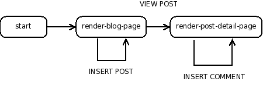

Continue: Web Applications in Racket
How do we make dynamic web applications?
In this tutorial, we show how to use Racket to achieve this goal.
We explain how to start up a web server, how to generate dynamic web content,
and how to interact with the user. Our working example will be a simple
web journal—
This tutorial is intended for students who have read enough of How to Design Programs to know how to use structures, higher-order functions, and a little bit of mutation.
1 Getting Started
Everything you need in this tutorial is provided in Racket; we will be using the DrRacket module language.
Enter the following into DrRacket’s Definitions window, then press the Run button.
#lang web-server/insta (define (start request) (response/xexpr '(html (head (title "My Blog")) (body (h1 "Under construction")))))
If a web browser comes up with an “Under Construction” page, then clap your hands with delight, because you’ve built your first web application! We haven’t yet gotten it to do much, but we’ll get there. For now, press the Stop button to shut the server down.
2 The Application
We want to motivate this tutorial by showing you how to develop a blog. Users of the blog should be able to create new posts and add comments to existing posts. We’ll approach the task iteratively, pointing out one or two pitfalls along the way. The game plan will be approximately as follows:
Show a static list of posts.
Allow a user to add new posts to the system.
Extend the model to let a user add comments to a post.
Allow all users to share the same set of posts.
Serialize our data structures to disk.
By the end of the tutorial, we’ll have a simple blogging application up and running.
3 Basic Blog
We begin by defining the necessary data structures. A post is:
(struct post (title body))
struct
(struct post (title body))
title : string? body : string?
Exercise. Make a few examples of posts.
Next we define a blog to be simply a list of posts:
值
blog : (listof post?)
Here, then, is a very simple example of a blog:
(define BLOG (list (post "First Post!" "Hey, this is my first post!")))
Now let’s get our web application to show it.
4 Rendering HTML
When a web browser visits our blog’s URL, the browser constructs a request structure and sends it across the network to our application. We need a function, which we’ll call start, to consume such requests and produce responses to them. One basic kind of response is to show an HTML page; this is done by the function response/xexpr, which takes an X-expression representing the desired HTML. An X-expression is defined as
(define xexpr/c (flat-rec-contract xexpr (or/c string? (cons/c symbol? (listof xexpr)) (cons/c symbol? (cons/c (listof (list/c symbol? string?)) (listof xexpr))))))
and the following examples illustrate how natural it is to use X-expressions to represent HTML.
The first alternative in xexpr/c is string?. For example, the HTML hello is represented as "hello". To guarantee valid HTML, strings are automatically escaped when output. Thus, the X-expression "<b>Unfinished tag" is rendered as the HTML <b>Unfinished tag, and not as <b>Unfinished tag. Similarly, "<i>Finished\ntag</i>" is rendered as <i>Finished tag</i>, and not as <i>Finished tag</i>.
The second alternative in xexpr/c is the recursive contract (cons/c symbol? (listof xexpr)). For example, the HTML <p>This is an example</p> is represented by the X-expression
'(p "This is an example").
And finally, the third alternative in xexpr/c allows for parameters in HTML tags. As examples, <a href="link.html">Past</a> is represented by
'(a ((href "link.html")) "Past")
and <p>This is <div class="emph">another</div> example.</p> is represented by
'(p "This is " (div ((class "emph")) "another") " example.").
We could also have produced these X-expressions “manually,” using cons and list, but that can get notationally heavy. For example, the following Racket expressions both evaluate to the same X-expression:
(list 'html (list 'head (list 'title "Some title")) (list 'body (list 'p "This is a simple static page.")))
'(html (head (title "Some title")) (body (p "This is a simple static page.")))
But the latter is much easier to read and type, because it uses a leading forward quote mark to express the list structure concisely. This is how to construct static html responses with aplomb! (For more on the extended list abbreviation form, see Section 13 of How to Design Programs.)
It turns out, however, that this simple kind of list abbreviation cannot produce web content that is dynamic. For if we try to inject expressions into an X-expression constructed by simple list abbreviation, those expressions will be treated as part of the list structure, literally! What we need instead is a notation that gives us the convenience of quoted list abbreviations, but that also allows us to treat portions of the list structure as normal expressions. That is, we would like to define a template whose placeholders can be expressed easily and filled in dynamically.
Racket provides this templating functionality, in the form of a notation called quasiquote. In quasiquotation a list is abbreviated not with a leading forward quote but with a leading back quote. If we wish any subexpression of this backquoted list to be evaluated normally (“unquoted”), then all we have to do is place a comma in front that subexpression. For example:
; render-greeting: string -> response ; Consumes a name, and produces a dynamic response. (define (render-greeting a-name) (response/xexpr `(html (head (title "Welcome")) (body (p ,(string-append "Hello " a-name))))))
Exercise. Write a function that consumes a post and produces an X-expression representing that content.
值
render-post : (post? . -> . xexpr/c)
As an example, we want:
(render-post (post "First post!" "This is a first post."))
to produce:
'(div ((class "post")) "First post!" (p "This is a first post."))
—
— — —
We will sometimes want to embed a list of X-expressions into another list that acts as a template. For example, given the list of X-expressions '((li "Larry") (li "Curly") (li "Moe")), we may want to create the single X-expression
'(ul (li "Larry") (li "Curly") (li "Moe"))
This can’t be done using plain unquoting, because placing a comma in front of '((li "Larry") (li "Curly") (li "Moe")) will unquote the entire list, yielding the malformed expression '(ul ((li "Larry") (li "Curly") (li "Moe"))).
Instead, we must splice the list in, like so: `(ul ,@'((li "Larry") (li "Curly") (li "Moe"))). The unquote-splicing form, ,@expression, allows us conveniently to splice a list of X-expression fragments into a larger template list. To generalize the example, here are two helper functions that convert any list of X-expressions into one X-expression representing an unordered, itemized HTML list:
; render-as-itemized-list: (listof xexpr) -> xexpr ; Consumes a list of items, and produces a rendering ; as an unordered list. (define (render-as-itemized-list fragments) `(ul ,@(map render-as-item fragments))) ; render-as-item: xexpr -> xexpr ; Consumes an xexpr, and produces a rendering ; as a list item. (define (render-as-item a-fragment) `(li ,a-fragment))
Exercise. Write a function render-posts that consumes a (listof post?) and produces an X-expression for that content.
值
As examples,
(render-posts empty)
should produce
'(div ((class "posts")))
and
(render-posts (list (post "Post 1" "Body 1") (post "Post 2" "Body 2")))
should produce
'(div ((class "posts")) (div ((class "post")) "Post 1" (p "Body 1")) (div ((class "post")) "Post 2" (p "Body 2")))
—
— — —
Now that we have the render-posts function handy, let’s revisit our web application and change our start function to return an interesting response.
#lang web-server/insta ; A blog is a (listof post) ; and a post is a (post title body) (struct post (title body)) ; BLOG: blog ; The static blog. (define BLOG (list (post "Second Post" "This is another post") (post "First Post" "This is my first post"))) ; start: request -> response ; Consumes a request, and produces a page that displays all of the ; web content. (define (start request) (render-blog-page BLOG request)) ; render-blog-page: blog request -> response ; Consumes a blog and a request, and produces an HTML page ; of the content of the blog. (define (render-blog-page a-blog request) (response/xexpr `(html (head (title "My Blog")) (body (h1 "My Blog") ,(render-posts a-blog))))) ; render-post: post -> xexpr ; Consumes a post, produces an xexpr fragment of the post. (define (render-post a-post) `(div ((class "post")) ,(post-title a-post) (p ,(post-body a-post)))) ; render-posts: blog -> xexpr ; Consumes a blog, produces an xexpr fragment ; of all its posts. (define (render-posts a-blog) `(div ((class "posts")) ,@(map render-post a-blog)))
If we press Run, we should see the blog posts in our web browser.
5 Inspecting Requests
Our application is still a bit too static: we build the page dynamically, but we don’t yet provide a way for the user to create new posts. Let’s tackle that now, by providing a form that lets the user add a new blog entry. When the user presses the submit button, we want the new post to appear at the top of the page.
We haven’t yet done anything with the request object that we’ve been passing around. As you may already have guessed, it isn’t really supposed to be ignored so much! When a user fills out a web form and submits it, the user’s browser constructs a new request that contains the form’s values, which we can extract on our end, using the function request-bindings:
值
request-bindings : (request? . -> . bindings?)
To extract a single web form value from a set of bindings, Racket provides the function extract-binding/single, which also takes the name of the corresponding field of the web form:
值
extract-binding/single : (symbol? bindings? . -> . string?)
To verify that a set of bindings contains a particular field, use exists-binding?:
值
exists-binding? : (symbol? bindings? . -> . boolean?)
With these functions, we can design functions that consume requests and respond to them usefully.
Exercise. Write a function can-parse-post? that consumes a set of bindings. It should produce #t if there exist bindings both for the symbols 'title and 'body, and #f otherwise.
值
Exercise. Write a function parse-post that consumes a set of bindings. Assuming that the bindings structure has values for the symbols 'title and 'body, parse-post should produce a post containing those values.
值
parse-post : (bindings? . -> . post?)
Now that we have these helper functions, we can extend our web application to handle form input. We’ll add a small form at the bottom of the web page, and we’ll adjust our program to handle the addition of new posts. So our new start method will check that the request has a parsable post, will then try to extend the set of posts, and will finally display the new set of blog posts:
#lang web-server/insta ; A blog is a (listof post) ; and a post is a (post title body) (struct post (title body)) ; BLOG: blog ; The static blog. (define BLOG (list (post "Second Post" "This is another post") (post "First Post" "This is my first post"))) ; start: request -> response ; Consumes a request and produces a page that displays all of the ; web content. (define (start request) (define a-blog (cond [(can-parse-post? (request-bindings request)) (cons (parse-post (request-bindings request)) BLOG)] [else BLOG])) (render-blog-page a-blog request)) ; can-parse-post?: bindings -> boolean ; Produces true if bindings contains values for 'title and 'body. (define (can-parse-post? bindings) (and (exists-binding? 'title bindings) (exists-binding? 'body bindings))) ; parse-post: bindings -> post ; Consumes a bindings, and produces a post out of the bindings. (define (parse-post bindings) (post (extract-binding/single 'title bindings) (extract-binding/single 'body bindings))) ; render-blog-page: blog request -> response ; Consumes a blog and a request, and produces an HTML page ; of the content of the blog. (define (render-blog-page a-blog request) (response/xexpr `(html (head (title "My Blog")) (body (h1 "My Blog") ,(render-posts a-blog) (form (input ((name "title"))) (input ((name "body"))) (input ((type "submit")))))))) ; render-post: post -> xexpr ; Consumes a post, produces an xexpr fragment of the post. (define (render-post a-post) `(div ((class "post")) ,(post-title a-post) (p ,(post-body a-post)))) ; render-posts: blog -> xexpr ; Consumes a blog, produces an xexpr fragment ; of all its posts. (define (render-posts a-blog) `(div ((class "posts")) ,@(map render-post a-blog)))
This solution seems to work, but it has a flaw! Try to add two new posts. What happens?
6 Advanced Control Flow
For the moment, let’s ignore the admittedly huge problem of having a blog that accepts only one new blog entry. Don’t worry, we’ll fix this!
The more pressing problem right now is a higher-level one: although we
do
have a function, start, that responds to requests directed
at our application’s URL, that function has begun to take on
too much responsibility. In particular, start now handles
two different kinds of requests: those for showing a
blog, and those for adding new blog posts. It has become a kind of traffic cop
—
Yes! The web server library provides a function, send/suspend/dispatch, that allows us to create URLs that direct requests aimed at them to specific functions in our application. We demonstrate with a dizzying example. In a new file, enter the following in DrRacket’s Definitions window.
#lang web-server/insta ; start: request -> response (define (start request) (phase-1 request)) ; phase-1: request -> response (define (phase-1 request) (define (response-generator embed/url) (response/xexpr `(html (body (h1 "Phase 1") (a ((href ,(embed/url phase-2))) "click me!"))))) (send/suspend/dispatch response-generator)) ; phase-2: request -> response (define (phase-2 request) (define (response-generator embed/url) (response/xexpr `(html (body (h1 "Phase 2") (a ((href ,(embed/url phase-1))) "click me!"))))) (send/suspend/dispatch response-generator))
This is a web application that goes round and round. When a user first visits the application, the user starts off in phase-1. The generated page has a hyperlink that, when clicked, continues to phase-2. The user can click back, and falls back to phase-1, and the cycle repeats.
Let’s look more closely at the send/suspend/dispatch mechanism. send/suspend/dispatch consumes a response-generating function and gives it another function, called embed/url, that we’ll use to build special URLs. What makes these URLs special is this: when a web browser visits one of them, our web application restarts, not from start, but from the handler that we associate with the URL. In the handler phase-1, the use of embed/url associates the link with the handler phase-2, and vice versa.
We can be even more sophisticated about the handlers associated with embed/url. Because a handler is just a request-consuming function, it can be defined locally and so can see all the other variables in the scope of its definition. Here’s another loopy example:
#lang web-server/insta ; start: request -> response (define (start request) (show-counter 0 request)) ; show-counter: number request -> doesn't return ; Displays a number that's hyperlinked: when the link is pressed, ; returns a new page with the incremented number. (define (show-counter n request) (define (response-generator embed/url) (response/xexpr `(html (head (title "Counting example")) (body (a ((href ,(embed/url next-number-handler))) ,(number->string n)))))) (define (next-number-handler request) (show-counter (+ n 1) request)) (send/suspend/dispatch response-generator))
This example shows that we can accumulate the results of an interaction. Even though the user starts off by visiting and seeing zero, the handlers produced by next-number-handler continue the interaction, accumulating a larger and larger number.
We’re going in circles now, so let’s move forward and return to our blog application. We’ll adjust the form’s action so that it directs a submission request to a URL associated with a separate handler, called insert-post-handler.
#lang web-server/insta ; A blog is a (listof post) ; and a post is a (post title body) (struct post (title body)) ; BLOG: blog ; The static blog. (define BLOG (list (post "Second Post" "This is another post") (post "First Post" "This is my first post"))) ; start: request -> doesn't return ; Consumes a request and produces a page that displays all of the ; web content. (define (start request) (render-blog-page BLOG request)) ; parse-post: bindings -> post ; Extracts a post out of the bindings. (define (parse-post bindings) (post (extract-binding/single 'title bindings) (extract-binding/single 'body bindings))) ; render-blog-page: blog request -> doesn't return ; Consumes a blog and a request, and produces an HTML page ; of the content of the blog. (define (render-blog-page a-blog request) (define (response-generator embed/url) (response/xexpr `(html (head (title "My Blog")) (body (h1 "My Blog") ,(render-posts a-blog) (form ((action ,(embed/url insert-post-handler))) (input ((name "title"))) (input ((name "body"))) (input ((type "submit")))))))) (define (insert-post-handler request) (render-blog-page (cons (parse-post (request-bindings request)) a-blog) request)) (send/suspend/dispatch response-generator)) ; render-post: post -> xexpr ; Consumes a post, produces an xexpr fragment of the post. (define (render-post a-post) `(div ((class "post")) ,(post-title a-post) (p ,(post-body a-post)))) ; render-posts: blog -> xexpr ; Consumes a blog, produces an xexpr fragment ; of all its posts. (define (render-posts a-blog) `(div ((class "posts")) ,@(map render-post a-blog)))
Note that the structure of the render-blog-page function is very similar to that of our last show-counter example. The user can finally add and see multiple posts to the blog.
Unfortunately, our design still suffers from a problem, which can be seen by adding a few posts to the system, and then visiting the web application’s URL in a new browser window. What happens when you try this?
7 Share and Share Alike
The problem with our application is that each browser window keeps track of its own distinct blog. For most people, this defeats the purpose of a blog, which is to share with others! When we insert a new post, rather than creating a new blog value, we’d like to modify the blog. In other words, we’d like to make a structural change. (How to Design Programs, Chapter 41). So let’s switch from just the BLOG binding to a list and instead bind it to a mutable structure. If we were to just use a structure, we’d write the following:
(struct blog (posts))
But, by default, structures in Racket are immutable. To gain access to structure mutators, we’ll need to override this default, by adding the #:mutable keyword to some of our structure definitions. In particular, if we want to allow changes to a blog, we must change our definition of the blog structure to the following:
(struct blog (posts) #:mutable)
struct
(struct blog (posts))
posts : (listof post?)
A mutable structure provides functions that change its fields; in this case, we are provided the structure mutator set-blog-posts!, which allows us to change the posts of a blog:
值
Exercise. Write a function blog-insert-post!
值
whose intended side effect is to extend a blog’s posts.
—
— — —
We must now modify the web application to use our new data representation of a blog. Since the blog is now referred to by the global variable BLOG, it no longer needs to be passed as a parameter to handlers like render-blog-page. Here is our updated web application, after adjustments that incorporate insert-blog-post!, and after a bit of variable cleanup:
#lang web-server/insta ; A blog is a (blog posts) ; where posts is a (listof post) (struct blog (posts) #:mutable) ; and post is a (post title body) ; where title is a string, and body is a string (struct post (title body)) ; BLOG: blog ; The initial BLOG. (define BLOG (blog (list (post "Second Post" "This is another post") (post "First Post" "This is my first post")))) ; blog-insert-post!: blog post -> void ; Consumes a blog and a post, adds the post at the top of the blog. (define (blog-insert-post! a-blog a-post) (set-blog-posts! a-blog (cons a-post (blog-posts a-blog)))) ; start: request -> doesn't return ; Consumes a request and produces a page that displays ; all of the web content. (define (start request) (render-blog-page request)) ; parse-post: bindings -> post ; Extracts a post out of the bindings. (define (parse-post bindings) (post (extract-binding/single 'title bindings) (extract-binding/single 'body bindings))) ; render-blog-page: request -> doesn't return ; Produces an HTML page of the content of the BLOG. (define (render-blog-page request) (define (response-generator embed/url) (response/xexpr `(html (head (title "My Blog")) (body (h1 "My Blog") ,(render-posts) (form ((action ,(embed/url insert-post-handler))) (input ((name "title"))) (input ((name "body"))) (input ((type "submit")))))))) (define (insert-post-handler request) (blog-insert-post! BLOG (parse-post (request-bindings request))) (render-blog-page request)) (send/suspend/dispatch response-generator)) ; render-post: post -> xexpr ; Consumes a post, produces an xexpr fragment of the post. (define (render-post a-post) `(div ((class "post")) ,(post-title a-post) (p ,(post-body a-post)))) ; render-posts: -> xexpr ; Consumes a blog, produces an xexpr fragment ; of all its posts. (define (render-posts) `(div ((class "posts")) ,@(map render-post (blog-posts BLOG))))
Now visit the blog from two separate browser windows and add posts from each of them. You’ll be glad to see that both windows share the same blog!
8 Extending the Model
Next, let’s extend the application so that a post can include a list of comments. The data definition becomes:
struct
(struct post (title body comments) #:mutable) title : string? body : string? comments : (listof string?)
Exercise. Write the updated data structure definition for posts. Make sure to make the structure mutable, since we intend to add comments to posts.
Exercise. Make up a few examples of posts.
Exercise. Define a function post-insert-comment!
值
whose intended side effect is to add a new comment to the end of the post’s list of comments.
Exercise. Adjust render-post so that the produced fragment will include the comments in an itemized list.
Exercise. Because we’ve extended post to include comments, you also need to adjust other, post-manipulating parts of the application, such as uses of post.
—
— — —
Now that we’ve adjusted our functions to accommodate post’s new structure, our web application should be runnable. The user may even see some of the fruits of our labor: if the initial BLOG has a post with comments, the user should now see them. On the other hand, something is obviously missing: the user is given no interface through which to add comments!
9 Breaking Up the Display
How should we incorporate comments more fully into the user’s web experience? Seeing all the posts and comments on one page may be a bit overwhelming, so maybe we should hold off on showing the comments on the main blog page. Instead, let’s make a secondary “detail” view of a post and present its comments there. Accordingly, the top-level view of a blog will show only the title and body of a post, and the number of its comments.
So now we need a way to visit a post’s detail page. One way to do this is to hyperlink a post’s title: if one wishes to see a post’s detail page, one should only have to click the post’s title. In that post’s detail page, we can even add a form to let the user add new comments. The page flow of this new version of our web application is then depicted simply as:

Each node (bubble) in this diagram corresponds to a request-consuming handler. As you might expect, we’ll be using send/suspend/dispatch some more. Every arrow in the diagram will be realized as a URL that we generate with embed/url.
This approach has a slightly messy consequence. Previously we rendered the list of posts without any hyperlinks. But since any function that generates a special dispatching URL must use embed/url to do so, we’ll need to adjust render-posts and render-post to consume and use embed/url itself when it makes those hyperlinked titles.
We now have a pretty sophisticated web application, one that permits the creation of posts and the addition of comments. Here is what it looks like:
#lang web-server/insta ; A blog is a (blog posts) ; where posts is a (listof post) (struct blog (posts) #:mutable) ; and post is a (post title body comments) ; where title is a string, body is a string, ; and comments is a (listof string) (struct post (title body comments) #:mutable) ; BLOG: blog ; The initial BLOG. (define BLOG (blog (list (post "Second Post" "This is another post" (list)) (post "First Post" "This is my first post" (list "First comment!"))))) ; blog-insert-post!: blog post -> void ; Consumes a blog and a post, adds the post at the top of the blog. (define (blog-insert-post! a-blog a-post) (set-blog-posts! a-blog (cons a-post (blog-posts a-blog)))) ; post-insert-comment!: post string -> void ; Consumes a post and a comment string. As a side-efect, ; adds the comment to the bottom of the post's list of comments. (define (post-insert-comment! a-post a-comment) (set-post-comments! a-post (append (post-comments a-post) (list a-comment)))) ; start: request -> doesn't return ; Consumes a request, and produces a page that displays ; all of the web content. (define (start request) (render-blog-page request)) ; render-blog-page: request -> doesn't return ; Produces an HTML page of the content of the ; BLOG. (define (render-blog-page request) (define (response-generator embed/url) (response/xexpr `(html (head (title "My Blog")) (body (h1 "My Blog") ,(render-posts embed/url) (form ((action ,(embed/url insert-post-handler))) (input ((name "title"))) (input ((name "body"))) (input ((type "submit")))))))) ; parse-post: bindings -> post ; Extracts a post out of the bindings. (define (parse-post bindings) (post (extract-binding/single 'title bindings) (extract-binding/single 'body bindings) (list))) (define (insert-post-handler request) (blog-insert-post! BLOG (parse-post (request-bindings request))) (render-blog-page request)) (send/suspend/dispatch response-generator)) ; render-post-detail-page: post request -> doesn't return ; Consumes a post and request, and produces a detail page ; of the post. The user will be able to insert new comments. (define (render-post-detail-page a-post request) (define (response-generator embed/url) (response/xexpr `(html (head (title "Post Details")) (body (h1 "Post Details") (h2 ,(post-title a-post)) (p ,(post-body a-post)) ,(render-as-itemized-list (post-comments a-post)) (form ((action ,(embed/url insert-comment-handler))) (input ((name "comment"))) (input ((type "submit")))))))) (define (parse-comment bindings) (extract-binding/single 'comment bindings)) (define (insert-comment-handler a-request) (post-insert-comment! a-post (parse-comment (request-bindings a-request))) (render-post-detail-page a-post a-request)) (send/suspend/dispatch response-generator)) ; render-post: post (handler -> string) -> xexpr ; Consumes a post, produces an xexpr fragment of the post. ; The fragment contains a link to show a detailed view of the post. (define (render-post a-post embed/url) (define (view-post-handler request) (render-post-detail-page a-post request)) `(div ((class "post")) (a ((href ,(embed/url view-post-handler))) ,(post-title a-post)) (p ,(post-body a-post)) (div ,(number->string (length (post-comments a-post))) " comment(s)"))) ; render-posts: (handler -> string) -> xexpr ; Consumes a embed/url, and produces an xexpr fragment ; of all its posts. (define (render-posts embed/url) (define (render-post/embed/url a-post) (render-post a-post embed/url)) `(div ((class "posts")) ,@(map render-post/embed/url (blog-posts BLOG)))) ; render-as-itemized-list: (listof xexpr) -> xexpr ; Consumes a list of items, and produces a rendering as ; an unorderered list. (define (render-as-itemized-list fragments) `(ul ,@(map render-as-item fragments))) ; render-as-item: xexpr -> xexpr ; Consumes an xexpr, and produces a rendering ; as a list item. (define (render-as-item a-fragment) `(li ,a-fragment))
But it still suffers from a problem: once in a post-detail-page, the only way for the user to return to the blog is to use the Back button! That’s disruptive, and it might allow the user get “stuck” in a dark corner of the web application. To solve this problem, let’s improve the page flow.
10 Adding a Back Button
Perhaps we should simply add a BACK link from the render-post-detail-page, one that returns us to the top-level blog. Here’s the corresponding page flow diagram:
Exercise. Adjust render-post-detail-page to include another link that goes back to render-blog-page.
And since a user may have a change of heart about a comment, let’s enrich the flow to give the user a chance to back out of submitting one.

Note that, although this change may seem complicated, it doesn’t affect the general shape of our handlers:
#lang web-server/insta ; A blog is a (blog posts) ; where posts is a (listof post) (struct blog (posts) #:mutable) ; and post is a (post title body comments) ; where title is a string, body is a string, ; and comments is a (listof string) (struct post (title body comments) #:mutable) ; BLOG: blog ; The initial BLOG. (define BLOG (blog (list (post "Second Post" "This is another post" (list)) (post "First Post" "This is my first post" (list "First comment!"))))) ; blog-insert-post!: blog post -> void ; Consumes a blog and a post, adds the post at the top of the blog. (define (blog-insert-post! a-blog a-post) (set-blog-posts! a-blog (cons a-post (blog-posts a-blog)))) ; post-insert-comment!: post string -> void ; Consumes a post and a comment string. As a side-efect, ; adds the comment to the bottom of the post's list of comments. (define (post-insert-comment! a-post a-comment) (set-post-comments! a-post (append (post-comments a-post) (list a-comment)))) ; start: request -> doesn't return ; Consumes a request and produces a page that displays ; all of the web content. (define (start request) (render-blog-page request)) ; render-blog-page: request -> doesn't return ; Produces an HTML page of the content of the ; BLOG. (define (render-blog-page request) (define (response-generator embed/url) (response/xexpr `(html (head (title "My Blog")) (body (h1 "My Blog") ,(render-posts embed/url) (form ((action ,(embed/url insert-post-handler))) (input ((name "title"))) (input ((name "body"))) (input ((type "submit")))))))) ; parse-post: bindings -> post ; Extracts a post out of the bindings. (define (parse-post bindings) (post (extract-binding/single 'title bindings) (extract-binding/single 'body bindings) (list))) (define (insert-post-handler request) (blog-insert-post! BLOG (parse-post (request-bindings request))) (render-blog-page request)) (send/suspend/dispatch response-generator)) ; render-post-detail-page: post request -> doesn't return ; Consumes a post and produces a detail page of the post. ; The user will be able to either insert new comments ; or go back to render-blog-page. (define (render-post-detail-page a-post request) (define (response-generator embed/url) (response/xexpr `(html (head (title "Post Details")) (body (h1 "Post Details") (h2 ,(post-title a-post)) (p ,(post-body a-post)) ,(render-as-itemized-list (post-comments a-post)) (form ((action ,(embed/url insert-comment-handler))) (input ((name "comment"))) (input ((type "submit")))) (a ((href ,(embed/url back-handler))) "Back to the blog"))))) (define (parse-comment bindings) (extract-binding/single 'comment bindings)) (define (insert-comment-handler request) (render-confirm-add-comment-page (parse-comment (request-bindings request)) a-post request)) (define (back-handler request) (render-blog-page request)) (send/suspend/dispatch response-generator)) ; render-confirm-add-comment-page : ; comment post request -> doesn't return ; Consumes a comment that we intend to add to a post, as well ; as the request. If the user follows through, adds a comment ; and goes back to the display page. Otherwise, goes back to ; the detail page of the post. (define (render-confirm-add-comment-page a-comment a-post request) (define (response-generator embed/url) (response/xexpr `(html (head (title "Add a Comment")) (body (h1 "Add a Comment") "The comment: " (div (p ,a-comment)) "will be added to " (div ,(post-title a-post)) (p (a ((href ,(embed/url yes-handler))) "Yes, add the comment.")) (p (a ((href ,(embed/url cancel-handler))) "No, I changed my mind!")))))) (define (yes-handler request) (post-insert-comment! a-post a-comment) (render-post-detail-page a-post request)) (define (cancel-handler request) (render-post-detail-page a-post request)) (send/suspend/dispatch response-generator)) ; render-post: post (handler -> string) -> xexpr ; Consumes a post, produces an xexpr fragment of the post. ; The fragment contains a link to show a detailed view of the post. (define (render-post a-post embed/url) (define (view-post-handler request) (render-post-detail-page a-post request)) `(div ((class "post")) (a ((href ,(embed/url view-post-handler))) ,(post-title a-post)) (p ,(post-body a-post)) (div ,(number->string (length (post-comments a-post))) " comment(s)"))) ; render-posts: (handler -> string) -> xexpr ; Consumes a embed/url, produces an xexpr fragment ; of all its posts. (define (render-posts embed/url) (define (render-post/embed/url a-post) (render-post a-post embed/url)) `(div ((class "posts")) ,@(map render-post/embed/url (blog-posts BLOG)))) ; render-as-itemized-list: (listof xexpr) -> xexpr ; Consumes a list of items, and produces a rendering as ; an unorderered list. (define (render-as-itemized-list fragments) `(ul ,@(map render-as-item fragments))) ; render-as-item: xexpr -> xexpr ; Consumes an xexpr, and produces a rendering ; as a list item. (define (render-as-item a-fragment) `(li ,a-fragment))
11 Decorating With Style!
Our web application is now functionally complete. But it’s visually lacking, so let’s try to improve its appearance. One way to add visual panache to our web pages is to use a cascading style sheet. For example, if we’d like to make all of our paragraphs green, we might insert the following style declaration into a response.
'(style ((type "text/css")) "p { color: green }")
It is tempting to embed such declarations directly into our responses. But our source file is already quite busy, and, as a matter of principle, we should separate logical representation from visual presentation. So, rather than embed the .css in the HTML response directly, let’s instead add a link reference to a separate .css file.
Up till now, all the content produced by our web application has come from a response-generating handler. But this dynamic generation of HTML is not necessary for content that doesn’t change. Examples of such static resources include images, documents, and .css files. To serve them alongside our web applications, we inform the web server of a directory that we have created specially for static files. The function static-files-path,
值
static-files-path : (path-string? -> void)
tells the web server to look in the given path whenever it receives a URL that looks like a request for a static resource.
Exercise. Create a simple web application called "test-static.rkt" with the following content:
#lang web-server/insta (define (start request) (response/xexpr '(html (head (title "Testing") (link ((rel "stylesheet") (href "/test-static.css") (type "text/css")))) (body (h1 "Testing") (h2 "This is a header") (p "This is " (span ((class "hot")) "hot") "."))))) (static-files-path "htdocs")
Make a subdirectory called "htdocs", rooted in the same directory as the "test-static.rkt" source. Just to see that we can serve this .css page, create a very simple .css file "test-static.css" in "htdocs/" with the following content:
body { |
margin-left: 10%; |
margin-right: 10%; |
} |
p { font-family: sans-serif } |
h1 { color: green } |
h2 { font-size: small } |
span.hot { color: red } |
Now run the application and look at the browser’s output. A Spartan web page should appear, but it should still have some color in its cheeks.
—
— — —
Exercise. Improve the presentation of the blog web application by writing an external style sheet that suits your tastes. Adjust all of the HTML response handlers to include a link to the style sheet.
12 The Double Submit Error
Our application has yet another subtle problem. To see it, bring the blog application up again, and add a post. Then reload the page. Reload the page again.
What you are observing is the well known “double-submit” problem. Whenever a user presses Reload, a request is sent to our application, and the problem is that some requests make the application mutate data structures.
A common technique that web developers use to dodge the double-submission problem is to redirect state-mutating requests to a different URL, one that is safe to reload. This trick is implemented in Racket by the function redirect/get:
值
redirect/get : (-> request?)
Its immediate side effect is to force the user’s browser to follow a redirection to a safe URL, and it gives us back that fresh new request.
For example, consider a toy application that lets the user add names to a roster:
#lang web-server/insta ; A roster is a (roster names) ; where names is a list of string. (struct roster (names) #:mutable) ; roster-add-name!: roster string -> void ; Given a roster and a name, adds the name ; to the end of the roster. (define (roster-add-name! a-roster a-name) (set-roster-names! a-roster (append (roster-names a-roster) (list a-name)))) (define ROSTER (roster '("kathi" "shriram" "dan"))) ; start: request -> doesn't return (define (start request) (show-roster request)) ; show-roster: request -> doesn't return (define (show-roster request) (define (response-generator embed/url) (response/xexpr `(html (head (title "Roster")) (body (h1 "Roster") ,(render-as-itemized-list (roster-names ROSTER)) (form ((action ,(embed/url add-name-handler))) (input ((name "a-name"))) (input ((type "submit")))))))) (define (parse-name bindings) (extract-binding/single 'a-name bindings)) (define (add-name-handler request) (roster-add-name! ROSTER (parse-name (request-bindings request))) (show-roster request)) (send/suspend/dispatch response-generator)) ; render-as-itemized-list: (listof xexpr) -> xexpr (define (render-as-itemized-list fragments) `(ul ,@(map render-as-item fragments))) ; render-as-item: xexpr -> xexpr (define (render-as-item a-fragment) `(li ,a-fragment))
This application suffers from the same problem as our blog does: if the user adds a name, and then presses reload, then the same name will be added twice.
We can fix this by changing a single expression; can you find it below?
#lang web-server/insta ; A roster is a (roster names) ; where names is a list of string. (struct roster (names) #:mutable) ; roster-add-name!: roster string -> void ; Given a roster and a name, adds the name ; to the end of the roster. (define (roster-add-name! a-roster a-name) (set-roster-names! a-roster (append (roster-names a-roster) (list a-name)))) (define ROSTER (roster '("kathi" "shriram" "dan"))) ; start: request -> doesn't return (define (start request) (show-roster request)) ; show-roster: request -> doesn't return (define (show-roster request) (define (response-generator embed/url) (response/xexpr `(html (head (title "Roster")) (body (h1 "Roster") ,(render-as-itemized-list (roster-names ROSTER)) (form ((action ,(embed/url add-name-handler))) (input ((name "a-name"))) (input ((type "submit")))))))) (define (parse-name bindings) (extract-binding/single 'a-name bindings)) (define (add-name-handler request) (roster-add-name! ROSTER (parse-name (request-bindings request))) (show-roster (redirect/get))) (send/suspend/dispatch response-generator)) ; render-as-itemized-list: (listof xexpr) -> xexpr (define (render-as-itemized-list fragments) `(ul ,@(map render-as-item fragments))) ; render-as-item: xexpr -> xexpr (define (render-as-item a-fragment) `(li ,a-fragment))
So the double-submit error is easy to prevent: whenever you have handlers that mutate the state of the system, use redirect/get when sending back your response.
Exercise. Use redirect/get to fix the double-submit error in the blog application.
With these minor fixes, our blog application now looks like this:
#lang web-server/insta ; A blog is a (blog posts) ; where posts is a (listof post) (struct blog (posts) #:mutable) ; and post is a (post title body comments) ; where title is a string, body is a string, ; and comments is a (listof string) (struct post (title body comments) #:mutable) ; BLOG: blog ; The initial BLOG. (define BLOG (blog (list (post "Second Post" "This is another post" (list)) (post "First Post" "This is my first post" (list "First comment!"))))) ; blog-insert-post!: blog post -> void ; Consumes a blog and a post, adds the post at the top of the blog. (define (blog-insert-post! a-blog a-post) (set-blog-posts! a-blog (cons a-post (blog-posts a-blog)))) ; post-insert-comment!: post string -> void ; Consumes a post and a comment string. As a side-efect, ; adds the comment to the bottom of the post's list of comments. (define (post-insert-comment! a-post a-comment) (set-post-comments! a-post (append (post-comments a-post) (list a-comment)))) ; start: request -> doesn't return ; Consumes a request and produces a page that displays ; all of the web content. (define (start request) (render-blog-page request)) ; render-blog-page: request -> doesn't return ; Produces an HTML page of the content of the ; BLOG. (define (render-blog-page request) (define (response-generator embed/url) (response/xexpr `(html (head (title "My Blog")) (body (h1 "My Blog") ,(render-posts embed/url) (form ((action ,(embed/url insert-post-handler))) (input ((name "title"))) (input ((name "body"))) (input ((type "submit")))))))) ; parse-post: bindings -> post ; Extracts a post out of the bindings. (define (parse-post bindings) (post (extract-binding/single 'title bindings) (extract-binding/single 'body bindings) (list))) (define (insert-post-handler request) (blog-insert-post! BLOG (parse-post (request-bindings request))) (render-blog-page (redirect/get))) (send/suspend/dispatch response-generator)) ; render-post-detail-page: post request -> doesn't return ; Consumes a post and produces a detail page of the post. ; The user will be able to either insert new comments ; or go back to render-blog-page. (define (render-post-detail-page a-post request) (define (response-generator embed/url) (response/xexpr `(html (head (title "Post Details")) (body (h1 "Post Details") (h2 ,(post-title a-post)) (p ,(post-body a-post)) ,(render-as-itemized-list (post-comments a-post)) (form ((action ,(embed/url insert-comment-handler))) (input ((name "comment"))) (input ((type "submit")))) (a ((href ,(embed/url back-handler))) "Back to the blog"))))) (define (parse-comment bindings) (extract-binding/single 'comment bindings)) (define (insert-comment-handler request) (render-confirm-add-comment-page (parse-comment (request-bindings request)) a-post request)) (define (back-handler request) (render-blog-page request)) (send/suspend/dispatch response-generator)) ; render-confirm-add-comment-page : ; comment post request -> doesn't return ; Consumes a comment that we intend to add to a post, as well ; as the request. If the user follows through, adds a comment ; and goes back to the display page. Otherwise, goes back to ; the detail page of the post. (define (render-confirm-add-comment-page a-comment a-post request) (define (response-generator embed/url) (response/xexpr `(html (head (title "Add a Comment")) (body (h1 "Add a Comment") "The comment: " (div (p ,a-comment)) "will be added to " (div ,(post-title a-post)) (p (a ((href ,(embed/url yes-handler))) "Yes, add the comment.")) (p (a ((href ,(embed/url cancel-handler))) "No, I changed my mind!")))))) (define (yes-handler request) (post-insert-comment! a-post a-comment) (render-post-detail-page a-post (redirect/get))) (define (cancel-handler request) (render-post-detail-page a-post request)) (send/suspend/dispatch response-generator)) ; render-post: post (handler -> string) -> xexpr ; Consumes a post, produces an xexpr fragment of the post. ; The fragment contains a link to show a detailed view of the post. (define (render-post a-post embed/url) (define (view-post-handler request) (render-post-detail-page a-post request)) `(div ((class "post")) (a ((href ,(embed/url view-post-handler))) ,(post-title a-post)) (p ,(post-body a-post)) (div ,(number->string (length (post-comments a-post))) " comment(s)"))) ; render-posts: (handler -> string) -> xexpr ; Consumes a embed/url, produces an xexpr fragment ; of all its posts. (define (render-posts embed/url) (define (render-post/embed/url a-post) (render-post a-post embed/url)) `(div ((class "posts")) ,@(map render-post/embed/url (blog-posts BLOG)))) ; render-as-itemized-list: (listof xexpr) -> xexpr ; Consumes a list of items, and produces a rendering as ; an unorderered list. (define (render-as-itemized-list fragments) `(ul ,@(map render-as-item fragments))) ; render-as-item: xexpr -> xexpr ; Consumes an xexpr, and produces a rendering ; as a list item. (define (render-as-item a-fragment) `(li ,a-fragment))
13 Abstracting the Model
If we “turn off the lights” by closing the program, the state of our application disappears into the ether. How do we get our ephemeral state to stick around? Before we tackle this problem, note that it does not apply to all of the application’s state, for we have no long-term interest in things like requests. What we do care about saving is our model of the blog.
If we look closely at our web application program, we see a seam between the model of our blog, and the web application that uses that model. Let’s isolate the model; it’s all the stuff near the top:
(struct blog (posts) #:mutable) (struct post (title body comments) #:mutable) (define BLOG ...) (define (blog-insert-post! ...) ...) (define (post-insert-comment! ...) ...)
In realistic web applications, the model and the web application are separated by a wall of abstraction. In theory, this separation allows us to make isolated changes in future without breaking the entire system. So let’s start separating. First we’ll rip the model out into a separate file, and then we’ll look into making the model persistent.
Create a new file called "model.rkt" with the following content.
#lang racket/base ; A blog is a (blog posts) ; where posts is a (listof post) (struct blog (posts) #:mutable) ; and post is a (post title body comments) ; where title is a string, body is a string, ; and comments is a (listof string) (struct post (title body comments) #:mutable) ; BLOG: blog ; The initial BLOG. (define BLOG (blog (list (post "Second Post" "This is another post" (list)) (post "First Post" "This is my first post" (list "First comment!"))))) ; blog-insert-post!: blog post -> void ; Consumes a blog and a post, adds the post at the top of the blog. (define (blog-insert-post! a-blog a-post) (set-blog-posts! a-blog (cons a-post (blog-posts a-blog)))) ; post-insert-comment!: post string -> void ; Consumes a post and a comment string. As a side-efect, ; adds the comment to the bottom of the post's list of comments. (define (post-insert-comment! a-post a-comment) (set-post-comments! a-post (append (post-comments a-post) (list a-comment)))) (provide (all-defined-out))
This is essentially a cut-and-paste of the lines we identified as our model. It’s written in the racket language because the model shouldn’t need to worry about web-server stuff. There’s one additional expression that looks a little odd at first:
It tells Racket to grant other files access to everything that’s defined in the "model.rkt" file.
Now we go back to our web application and change it to use this model, by replacing the deleted model code with the expression
(require "model.rkt")
which hooks our web application module up to the "model.rkt" module.
#lang web-server/insta (require "model.rkt") ; start: request -> doesn't return ; Consumes a request and produces a page that displays ; all of the web content. (define (start request) (render-blog-page request)) ; render-blog-page: request -> doesn't return ; Produces an HTML page of the content of the ; BLOG. (define (render-blog-page request) (define (response-generator embed/url) (response/xexpr `(html (head (title "My Blog")) (body (h1 "My Blog") ,(render-posts embed/url) (form ((action ,(embed/url insert-post-handler))) (input ((name "title"))) (input ((name "body"))) (input ((type "submit")))))))) ; parse-post: bindings -> post ; Extracts a post out of the bindings. (define (parse-post bindings) (post (extract-binding/single 'title bindings) (extract-binding/single 'body bindings) (list))) (define (insert-post-handler request) (blog-insert-post! BLOG (parse-post (request-bindings request))) (render-blog-page (redirect/get))) (send/suspend/dispatch response-generator)) ; render-post-detail-page: post request -> doesn't return ; Consumes a post and produces a detail page of the post. ; The user will be able to either insert new comments ; or go back to render-blog-page. (define (render-post-detail-page a-post request) (define (response-generator embed/url) (response/xexpr `(html (head (title "Post Details")) (body (h1 "Post Details") (h2 ,(post-title a-post)) (p ,(post-body a-post)) ,(render-as-itemized-list (post-comments a-post)) (form ((action ,(embed/url insert-comment-handler))) (input ((name "comment"))) (input ((type "submit")))) (a ((href ,(embed/url back-handler))) "Back to the blog"))))) (define (parse-comment bindings) (extract-binding/single 'comment bindings)) (define (insert-comment-handler request) (render-confirm-add-comment-page (parse-comment (request-bindings request)) a-post request)) (define (back-handler request) (render-blog-page request)) (send/suspend/dispatch response-generator)) ; render-confirm-add-comment-page : ; comment post request -> doesn't return ; Consumes a comment that we intend to add to a post, as well ; as the request. If the user follows through, adds a comment ; and goes back to the display page. Otherwise, goes back to ; the detail page of the post. (define (render-confirm-add-comment-page a-comment a-post request) (define (response-generator embed/url) (response/xexpr `(html (head (title "Add a Comment")) (body (h1 "Add a Comment") "The comment: " (div (p ,a-comment)) "will be added to " (div ,(post-title a-post)) (p (a ((href ,(embed/url yes-handler))) "Yes, add the comment.")) (p (a ((href ,(embed/url cancel-handler))) "No, I changed my mind!")))))) (define (yes-handler request) (post-insert-comment! a-post a-comment) (render-post-detail-page a-post (redirect/get))) (define (cancel-handler request) (render-post-detail-page a-post request)) (send/suspend/dispatch response-generator)) ; render-post: post (handler -> string) -> xexpr ; Consumes a post, produces an xexpr fragment of the post. ; The fragment contains a link to show a detailed view of the post. (define (render-post a-post embed/url) (define (view-post-handler request) (render-post-detail-page a-post request)) `(div ((class "post")) (a ((href ,(embed/url view-post-handler))) ,(post-title a-post)) (p ,(post-body a-post)) (div ,(number->string (length (post-comments a-post))) " comment(s)"))) ; render-posts: (handler -> string) -> xexpr ; Consumes a embed/url, produces an xexpr fragment ; of all its posts. (define (render-posts embed/url) (define (render-post/embed/url a-post) (render-post a-post embed/url)) `(div ((class "posts")) ,@(map render-post/embed/url (blog-posts BLOG)))) ; render-as-itemized-list: (listof xexpr) -> xexpr ; Consumes a list of items, and produces a rendering as ; an unorderered list. (define (render-as-itemized-list fragments) `(ul ,@(map render-as-item fragments))) ; render-as-item: xexpr -> xexpr ; Consumes an xexpr, and produces a rendering ; as a list item. (define (render-as-item a-fragment) `(li ,a-fragment))
14 A Persistent Model
Now that the model resides in a separate module, we can more easily modify it and, in particular, can make it persistent.
The first step is to make the model structures serializable. Earlier, we made the
structures mutable by adding #:mutable to their
definitions. Similarly, when the keyword #:prefab is added to the
definition of a structure, Racket understands that the structure can be
“previously fabricated,” that is, created before the program started
running—
(struct blog (posts) #:mutable #:prefab)
blog structures can now be read from the outside world with read and written to it with write. But we also need to make sure that everything inside a blog structure is also (transitively) marked as #:prefab.
Exercise. Write the new structure definition for posts.
At this point, we can read and write the blog to disk. So let’s do it. First, we’ll add to the model a path pointing to where the blog resides on disk:
struct
(struct blog (home posts) #:mutable #:prefab) home : string? posts : (listof post?)
Notice that we will need to convert the path into a string. Why didn’t we just make the blog structure contain paths? Answer: They can’t be used with read and write.
Exercise. Write the new structure definition for blogs.
Next we create a function that allows our application to initialize the blog:
; initialize-blog! : path? -> blog ; Reads a blog from a path, if not present, returns default (define (initialize-blog! home) (define (log-missing-exn-handler exn) (blog (path->string home) (list (post "First Post" "This is my first post" (list "First comment!")) (post "Second Post" "This is another post" (list))))) (define the-blog (with-handlers ([exn? log-missing-exn-handler]) (with-input-from-file home read))) (set-blog-home! the-blog (path->string home)) the-blog)
initialize-blog! takes a path and tries to read from it. If the path contains a blog structure, then read will parse it, because blogs are #:prefab. If there is no file at the path, or if the file has some spurious data, then read or with-input-from-file will throw an exception. with-handlers supplies an exception handler that reacts to any error by returning the default blog structure. After the-blog is bound to the newly read (or default) structure, we set the home to the correct path.
Next we need a function to save the model to the disk:
; save-blog! : blog -> void ; Saves the contents of a blog to its home (define (save-blog! a-blog) (define (write-to-blog) (write a-blog)) (with-output-to-file (blog-home a-blog) write-to-blog #:exists 'replace))
save-blog! writes the model to its home; by supplying an #:exists clause to with-output-to-file, it ensures that the old contents on disk will be overwritten.
This function can now be used to save the blog structure whenever it is modified by the user. Since modifications are made only by the model, only blog-insert-post! and post-insert-comment! will need to be updated.
Exercise. Change blog-insert-post! and post-insert-comment! to call save-blog!.
—
— — —
You may have noticed a problem when trying to update post-insert-comment!: the function has no blog to pass to save-blog!. We will therefore need to give it a blog argument and change the application appropriately. While we’re at it, let’s change blog-insert-post! to accept the contents of the post structure, rather the structure itself. This improves the model’s interface, by making it more abstract:
Exercise. Write the new definitions of blog-insert-post! and post-insert-comment!. Remember to call save-blog!.
In the previous iteration of the model, we used (provide (all-defined-out)) to expose all of the model’s definitions. This transgresses the principle of abstraction, which tells us to hide implementation details like private functions and internal data structures. We’ll conform to that principle now, by using a form of provide that names the exposed definitions explicitly.
(provide blog-insert-post! post-insert-comment!)
(provide blog? blog-posts post? post-title post-body post-comments initialize-blog! blog-insert-post! post-insert-comment!)
Since these nine functions are all we need from the module, this degree of exposure is just right.
—
— — —
The last step is to change the application. We need to call initialize-blog! to read in the blog structure, and, since there is no longer a a BLOG export, we need to pass the returned blog value around the application.
First, change start to call initialize-blog! with a path in our home directory:
(define (start request) (render-blog-page (initialize-blog! (build-path (current-directory) "the-blog-data.db")) request))
Exercise. Thread the blog structure through the application appropriately to give blog-insert-post! and post-insert-comment! the correct values. You’ll also need to change how render-blog-page adds new posts.
—
— — —
Our model is now:
#lang racket/base (require racket/list) ; A blog is a (blog home posts) ; where home is a string, posts is a (listof post) (struct blog (home posts) #:mutable #:prefab) ; and post is a (post blog title body comments) ; where title is a string, body is a string, ; and comments is a (listof string) (struct post (title body comments) #:mutable #:prefab) ; initialize-blog! : path? -> blog ; Reads a blog from a path, if not present, returns default (define (initialize-blog! home) (define (log-missing-exn-handler exn) (blog (path->string home) (list (post "Second Post" "This is another post" (list)) (post "First Post" "This is my first post" (list "First comment!"))))) (define the-blog (with-handlers ([exn? log-missing-exn-handler]) (with-input-from-file home read))) (set-blog-home! the-blog (path->string home)) the-blog) ; save-blog! : blog -> void ; Saves the contents of a blog to its home (define (save-blog! a-blog) (define (write-to-blog) (write a-blog)) (with-output-to-file (blog-home a-blog) write-to-blog #:exists 'replace)) ; blog-insert-post!: blog string string -> void ; Consumes a blog and a post, adds the post at the top of the blog. (define (blog-insert-post! a-blog title body) (set-blog-posts! a-blog (cons (post title body empty) (blog-posts a-blog))) (save-blog! a-blog)) ; post-insert-comment!: blog post string -> void ; Consumes a blog, a post and a comment string. As a side-efect, ; adds the comment to the bottom of the post's list of comments. (define (post-insert-comment! a-blog a-post a-comment) (set-post-comments! a-post (append (post-comments a-post) (list a-comment))) (save-blog! a-blog)) (provide blog? blog-posts post? post-title post-body post-comments initialize-blog! blog-insert-post! post-insert-comment!)
And our application is:
#lang web-server/insta (require "model-2.rkt") ; start: request -> doesn't return ; Consumes a request and produces a page that displays ; all of the web content. (define (start request) (render-blog-page (initialize-blog! (build-path (current-directory) "the-blog-data.db")) request)) ; render-blog-page: blog request -> doesn't return ; Produces an HTML page of the content of the ; blog. (define (render-blog-page a-blog request) (define (response-generator embed/url) (response/xexpr `(html (head (title "My Blog")) (body (h1 "My Blog") ,(render-posts a-blog embed/url) (form ((action ,(embed/url insert-post-handler))) (input ((name "title"))) (input ((name "body"))) (input ((type "submit")))))))) (define (insert-post-handler request) (define bindings (request-bindings request)) (blog-insert-post! a-blog (extract-binding/single 'title bindings) (extract-binding/single 'body bindings)) (render-blog-page a-blog (redirect/get))) (send/suspend/dispatch response-generator)) ; render-post-detail-page: post request -> doesn't return ; Consumes a post and produces a detail page of the post. ; The user will be able to either insert new comments ; or go back to render-blog-page. (define (render-post-detail-page a-blog a-post request) (define (response-generator embed/url) (response/xexpr `(html (head (title "Post Details")) (body (h1 "Post Details") (h2 ,(post-title a-post)) (p ,(post-body a-post)) ,(render-as-itemized-list (post-comments a-post)) (form ((action ,(embed/url insert-comment-handler))) (input ((name "comment"))) (input ((type "submit")))) (a ((href ,(embed/url back-handler))) "Back to the blog"))))) (define (parse-comment bindings) (extract-binding/single 'comment bindings)) (define (insert-comment-handler request) (render-confirm-add-comment-page a-blog (parse-comment (request-bindings request)) a-post request)) (define (back-handler request) (render-blog-page a-blog request)) (send/suspend/dispatch response-generator)) ; render-confirm-add-comment-page : ; blog comment post request -> doesn't return ; Consumes a comment that we intend to add to a post, as well ; as the request. If the user follows through, adds a comment ; and goes back to the display page. Otherwise, goes back to ; the detail page of the post. (define (render-confirm-add-comment-page a-blog a-comment a-post request) (define (response-generator embed/url) (response/xexpr `(html (head (title "Add a Comment")) (body (h1 "Add a Comment") "The comment: " (div (p ,a-comment)) "will be added to " (div ,(post-title a-post)) (p (a ((href ,(embed/url yes-handler))) "Yes, add the comment.")) (p (a ((href ,(embed/url cancel-handler))) "No, I changed my mind!")))))) (define (yes-handler request) (post-insert-comment! a-blog a-post a-comment) (render-post-detail-page a-blog a-post (redirect/get))) (define (cancel-handler request) (render-post-detail-page a-blog a-post request)) (send/suspend/dispatch response-generator)) ; render-post: post (handler -> string) -> xexpr ; Consumes a post, produces an xexpr fragment of the post. ; The fragment contains a link to show a detailed view of the post. (define (render-post a-blog a-post embed/url) (define (view-post-handler request) (render-post-detail-page a-blog a-post request)) `(div ((class "post")) (a ((href ,(embed/url view-post-handler))) ,(post-title a-post)) (p ,(post-body a-post)) (div ,(number->string (length (post-comments a-post))) " comment(s)"))) ; render-posts: blog (handler -> string) -> xexpr ; Consumes a embed/url, produces an xexpr fragment ; of all its posts. (define (render-posts a-blog embed/url) (define (render-post/embed/url a-post) (render-post a-blog a-post embed/url)) `(div ((class "posts")) ,@(map render-post/embed/url (blog-posts a-blog)))) ; render-as-itemized-list: (listof xexpr) -> xexpr ; Consumes a list of items, and produces a rendering as ; an unorderered list. (define (render-as-itemized-list fragments) `(ul ,@(map render-as-item fragments))) ; render-as-item: xexpr -> xexpr ; Consumes an xexpr, and produces a rendering ; as a list item. (define (render-as-item a-fragment) `(li ,a-fragment))
—
— — —
This approach to persistence can work surprisingly well for simple applications. But as our application’s needs grow, we will have to deal with concurrency issues, the lack of a simple query language over our data model, etc. So, in the next section, we’ll explain how to use an SQL database to store our blog model.
15 Using an SQL database
To employ an SQL database, we use the following bindings from the db library: connection?, sqlite3-connect, table-exists?, query-exec, query-list, and query-value. Import them by adding the following to the top of the model:
(require db)
Next, we define a relational structure for our model using the following tables:
CREATE TABLE posts (id INTEGER PRIMARY KEY, title TEXT, body TEXT) |
CREATE TABLE comments (pid INTEGER, content TEXT) |
Like the Racket structure, a post in the database has a title and a body,
but it also has an identifier. (Actually, the Racket structure had an
identifier as well—
As for the comments, each has some textual content and is connected to a post via identifier. We could have chosen to serialize comments with write and add a new TEXT column to the posts table to store the value. But a separate comments table conforms better to relational style.
A blog structure is now simply a container for the database handle:
struct
(struct blog (db))
db : connection?
Exercise. Write the blog structure definition. It does not need to be mutable or serializable.
; initialize-blog! : path? -> blog? ; Sets up a blog database (if it doesn't exist) (define (initialize-blog! home) (define db (sqlite3-connect #:database home #:mode 'create)) (define the-blog (blog db)) (unless (table-exists? db "posts") (query-exec db (string-append "CREATE TABLE posts " "(id INTEGER PRIMARY KEY, title TEXT, body TEXT)")) (blog-insert-post! the-blog "First Post" "This is my first post") (blog-insert-post! the-blog "Second Post" "This is another post")) (unless (table-exists? db "comments") (query-exec db "CREATE TABLE comments (pid INTEGER, content TEXT)") (post-insert-comment! the-blog (first (blog-posts the-blog)) "First comment!")) the-blog)
Given the 'create flag, sqlite3-connect creates a database if one does not already exist at the home path. At this time, it would be good to change your call to initialize-blog! to use a different path, because otherwise you will be trying to parse the old S-expression datafile as an SQLite database, which will fail.
We still need to initialize the database with the table definitions and initial data. Previously we used blog-insert-post! and post-insert-comment! for this purpose; here are their new implementations:
; blog-insert-post!: blog? string? string? -> void ; Consumes a blog and a post, adds the post at the top of the blog. (define (blog-insert-post! a-blog title body) (query-exec (blog-db a-blog) "INSERT INTO posts (title, body) VALUES (?, ?)" title body)) ; post-insert-comment!: blog? post string -> void ; Consumes a blog, a post and a comment string. As a side-effect, ; adds the comment to the bottom of the post's list of comments. (define (post-insert-comment! a-blog p a-comment) (query-exec (blog-db a-blog) "INSERT INTO comments (pid, content) VALUES (?, ?)" (post-id p) a-comment))
—
— — —
Note that the SQL queries above use the SQL placeholder, ?, to perform string substitution. If they had performed it with format and ~a instead, a malicious user could submit a post with a title like "null', 'null') and INSERT INTO accounts (username,\npassword) VALUES ('ur','hacked" and get query-exec to make two INSERTs instead of one. This is called an SQL injection attack.
SQL placeholders prevent such attacks by ensuring that the query is submitted as-is to SQLite, which then parses it and applies the arguments. This approach ensures that the arguments are treated strictly as data.
—
— — —
In post-insert-comment! we use post-id but we have not yet defined the new post structure. Since the post table schema uses an integer as identifier, it would seem sufficient to do the same for the post structure. However, a structure so defined would not indicate which blog, and consequently which database, a post belongs to. We would thus be unable to extract the title or body values.
The solution, of course, is to associate the blog with each post:
struct
(struct post (blog id))
blog : blog? id : integer?
Exercise. Write the structure definition for posts.
The only function that creates posts is blog-posts:
; blog-posts : blog -> (listof post?) ; Queries for the post ids (define (blog-posts a-blog) (define (id->post an-id) (post a-blog an-id)) (map id->post (query-list (blog-db a-blog) "SELECT id FROM posts")))
query-list can be used for queries that return a single column (e.g., "SELECT id FROM posts"), and it returns a list of that column’s values.
; post-title : post -> string? ; Queries for the title (define (post-title a-post) (query-value (blog-db (post-blog a-post)) "SELECT title FROM posts WHERE id = ?" (post-id a-post)))
query-value is used with queries that return a single value (that is, one row and one column).
Exercise. Write the definition of post-body.
Exercise. Write the definition of post-comments. (Hint: Use blog-posts as a template, not post-title.)
—
— — —
The only change that we need to make to the application is to require the new model. Note that its interface remains unchanged!
—
— — —
Our model is now:
#lang racket/base (require racket/list db) ; A blog is a (blog db) ; where db is an sqlite connection (struct blog (db)) ; A post is a (post blog id) ; where blog is a blog and id is an integer? (struct post (blog id)) ; initialize-blog! : path? -> blog? ; Sets up a blog database (if it doesn't exist) (define (initialize-blog! home) (define db (sqlite3-connect #:database home #:mode 'create)) (define the-blog (blog db)) (unless (table-exists? db "posts") (query-exec db (string-append "CREATE TABLE posts " "(id INTEGER PRIMARY KEY, title TEXT, body TEXT)")) (blog-insert-post! the-blog "First Post" "This is my first post") (blog-insert-post! the-blog "Second Post" "This is another post")) (unless (table-exists? db "comments") (query-exec db "CREATE TABLE comments (pid INTEGER, content TEXT)") (post-insert-comment! the-blog (first (blog-posts the-blog)) "First comment!")) the-blog) ; blog-posts : blog -> (listof post?) ; Queries for the post ids (define (blog-posts a-blog) (define (id->post an-id) (post a-blog an-id)) (map id->post (query-list (blog-db a-blog) "SELECT id FROM posts"))) ; post-title : post -> string? ; Queries for the title (define (post-title a-post) (query-value (blog-db (post-blog a-post)) "SELECT title FROM posts WHERE id = ?" (post-id a-post))) ; post-body : post -> string? ; Queries for the body (define (post-body p) (query-value (blog-db (post-blog p)) "SELECT body FROM posts WHERE id = ?" (post-id p))) ; post-comments : post -> (listof string?) ; Queries for the comments (define (post-comments p) (query-list (blog-db (post-blog p)) "SELECT content FROM comments WHERE pid = ?" (post-id p))) ; blog-insert-post!: blog? string? string? -> void ; Consumes a blog and a post, adds the post at the top of the blog. (define (blog-insert-post! a-blog title body) (query-exec (blog-db a-blog) "INSERT INTO posts (title, body) VALUES (?, ?)" title body)) ; post-insert-comment!: blog? post string -> void ; Consumes a blog, a post and a comment string. As a side-efect, ; adds the comment to the bottom of the post's list of comments. (define (post-insert-comment! a-blog p a-comment) (query-exec (blog-db a-blog) "INSERT INTO comments (pid, content) VALUES (?, ?)" (post-id p) a-comment)) (provide blog? blog-posts post? post-title post-body post-comments initialize-blog! blog-insert-post! post-insert-comment!)
And our application is:
#lang web-server/insta (require "model-3.rkt") ....
See Databases and Web Servlets for more information on writing database-backed web servlets.
16 Using Formlets
Now let’s go back to the application code. One of our poor design choices is to have made a loose connection between the name used to identify a form element in the rendering code, and the name used for it in the extracting code:
; render-blog-page: blog request -> doesnt' ; Send an HTML page of the content of the ; blog. (define (render-blog-page a-blog request) (define (response-generator embed/url) (response/xexpr `(html (head (title "My Blog")) (body (h1 "My Blog") ,(render-posts a-blog embed/url) (form ((action ,(embed/url insert-post-handler))) ; "title" is used here (input ((name "title"))) (input ((name "body"))) (input ((type "submit")))))))) (define (insert-post-handler request) (define bindings (request-bindings request)) (blog-insert-post! a-blog ; And "title" is used here. (extract-binding/single 'title bindings) (extract-binding/single 'body bindings)) (render-blog-page a-blog (redirect/get))) (send/suspend/dispatch response-generator))
formlet-display takes a formlet and returns its rendering as a list of X-expressions. This will generate unique names for its form elements.
formlet-process takes a formlet and a request and processes the formlet, i.e., extracts the bindings from the request using the names generated by formlet-display.
A formlet is created using the formlet syntax. For example, here is a formlet for render-blog-page:
; new-post-formlet : formlet (values string? string?) ; A formlet for requesting a title and body of a post (define new-post-formlet (formlet (#%# ,{input-string . => . title} ,{input-string . => . body}) (values title body)))
#%# introduces a list of X-expressions
,{=> formlet id} embeds the formlet formlet as a subformlet and it attaches the name id to the result of processing this subformlet.
For example, input-string is itself a library formlet that yields a string, and ,{=> input-string title} embeds input-string in new-post-formlet and associates the name title to that string.
input-string is rendered as `(input ([type "text"] [name ,fresh_name])), so (formlet-display new-post-formlet) is rendered as:(list '(input ([type "text"] [name "input_0"])) '(input ([type "text"] [name "input_1"])))
The second argument of formlet determines how formlet-process should process the formlet. That is, it specifies how to group and order the results of processing the formlet’s subformlets: the identifiers on the right-hand side of => are bound to the results of processing the subformlets.
For example, input-string is processed as (extract-binding/single fresh_name (request-bindings request)). Thus, if request binds "input_0" to "Title" and "input_1" to "Body", then (formlet-process new-post-formlet request) returns (values "Title" "Body").
; render-blog-page: blog request -> doesn't return ; Sends an HTML page of the content of the ; blog. (define (render-blog-page a-blog request) (define (response-generator embed/url) (response/xexpr `(html (head (title "My Blog")) (body (h1 "My Blog") ,(render-posts a-blog embed/url) (form ([action ,(embed/url insert-post-handler)]) ,@(formlet-display new-post-formlet) (input ([type "submit"]))))))) (define (insert-post-handler request) (define-values (title body) (formlet-process new-post-formlet request)) (blog-insert-post! a-blog title body) (render-blog-page a-blog (redirect/get))) (send/suspend/dispatch response-generator))
Alternative. The formlet shown above uses the input-string combinator, which combines a bunch of other formlets into one container with sensible defaults. Sometimes it is useful to break it apart to provide different arguments to the subpieces. For example, suppose we wanted to add a CSS class to the form elements? Here’s how we’d do that:
(define new-post-formlet (formlet (#%# ,((to-string (required (text-input #:attributes '([class "form-text"])))) . => . title) ,((to-string (required (text-input #:attributes '([class "form-text"])))) . => . body)) (values title body)))
Exercise. Write a formlet and use it in render-post-detail-page.
—
— — —
Our application is now:
#lang web-server/insta (require web-server/formlets "model-3.rkt") ; start: request -> doesn't return ; Consumes a request and produces a page that displays ; all of the web content. (define (start request) (render-blog-page (initialize-blog! (build-path (current-directory) "the-blog-data.sqlite")) request)) ; new-post-formlet : formlet (values string? string?) ; A formlet for requesting a title and body of a post (define new-post-formlet (formlet (#%# ,{input-string . => . title} ,{input-string . => . body}) (values title body))) ; render-blog-page: blog request -> doesn't return ; Produces an HTML page of the content of the ; blog. (define (render-blog-page a-blog request) (define (response-generator embed/url) (response/xexpr `(html (head (title "My Blog")) (body (h1 "My Blog") ,(render-posts a-blog embed/url) (form ([action ,(embed/url insert-post-handler)]) ,@(formlet-display new-post-formlet) (input ([type "submit"]))))))) (define (insert-post-handler request) (define-values (title body) (formlet-process new-post-formlet request)) (blog-insert-post! a-blog title body) (render-blog-page a-blog (redirect/get))) (send/suspend/dispatch response-generator)) ; new-comment-formlet : formlet string ; A formlet for requesting a comment (define new-comment-formlet input-string) ; render-post-detail-page: post request -> doesn't return ; Consumes a post and produces a detail page of the post. ; The user will be able to either insert new comments ; or go back to render-blog-page. (define (render-post-detail-page a-blog a-post request) (define (response-generator embed/url) (response/xexpr `(html (head (title "Post Details")) (body (h1 "Post Details") (h2 ,(post-title a-post)) (p ,(post-body a-post)) ,(render-as-itemized-list (post-comments a-post)) (form ([action ,(embed/url insert-comment-handler)]) ,@(formlet-display new-comment-formlet) (input ([type "submit"]))) (a ([href ,(embed/url back-handler)]) "Back to the blog"))))) (define (insert-comment-handler request) (render-confirm-add-comment-page a-blog (formlet-process new-comment-formlet request) a-post request)) (define (back-handler request) (render-blog-page a-blog request)) (send/suspend/dispatch response-generator)) ; render-confirm-add-comment-page : ; blog comment post request -> doesn't return ; Consumes a comment that we intend to add to a post, as well ; as the request. If the user follows through, adds a comment ; and goes back to the display page. Otherwise, goes back to ; the detail page of the post. (define (render-confirm-add-comment-page a-blog a-comment a-post request) (define (response-generator embed/url) (response/xexpr `(html (head (title "Add a Comment")) (body (h1 "Add a Comment") "The comment: " (div (p ,a-comment)) "will be added to " (div ,(post-title a-post)) (p (a ([href ,(embed/url yes-handler)]) "Yes, add the comment.")) (p (a ([href ,(embed/url cancel-handler)]) "No, I changed my mind!")))))) (define (yes-handler request) (post-insert-comment! a-blog a-post a-comment) (render-post-detail-page a-blog a-post (redirect/get))) (define (cancel-handler request) (render-post-detail-page a-blog a-post request)) (send/suspend/dispatch response-generator)) ; render-post: post (handler -> string) -> xexpr ; Consumes a post, produces an xexpr fragment of the post. ; The fragment contains a link to show a detailed view of the post. (define (render-post a-blog a-post embed/url) (define (view-post-handler request) (render-post-detail-page a-blog a-post request)) `(div ([class "post"]) (a ([href ,(embed/url view-post-handler)]) ,(post-title a-post)) (p ,(post-body a-post)) (div ,(number->string (length (post-comments a-post))) " comment(s)"))) ; render-posts: blog (handler -> string) -> xexpr ; Consumes a embed/url, produces an xexpr fragment ; of all its posts. (define (render-posts a-blog embed/url) (define (render-post/embed/url a-post) (render-post a-blog a-post embed/url)) `(div ([class "posts"]) ,@(map render-post/embed/url (blog-posts a-blog)))) ; render-as-itemized-list: (listof xexpr) -> xexpr ; Consumes a list of items, and produces a rendering as ; an unorderered list. (define (render-as-itemized-list fragments) `(ul ,@(map render-as-item fragments))) ; render-as-item: xexpr -> xexpr ; Consumes an xexpr, and produces a rendering ; as a list item. (define (render-as-item a-fragment) `(li ,a-fragment))
17 Leaving DrRacket
We’ve been in the habit of pressing the Run button to run our application in DrRacket. But if we were actually to deploy an application, we’d need to launch it by a different method.
Second, add the following at the bottom of your application:
(require web-server/servlet-env) (serve/servlet start #:launch-browser? #f #:quit? #f #:listen-ip #f #:port 8000 #:extra-files-paths (list (build-path your-path-here "htdocs")) #:servlet-path "/servlets/APPLICATION.rkt")
You can change the value of the #:port parameter to use a different port.
#:listen-ip is set to #f so that the server will listen on all available IPs.
You should change your-path-here to be the path to the parent of your htdocs directory.
You should change "APPLICATION.rkt" to be the name of your application.
Third, to run your server, you can either press Run in DrRacket, or type
racket -t <file.rkt>
(using your own file name, of course). Both of these will start a Web server for your application. Your application will be available at http://localhost:8000/servlets/APPLICATION.rkt.
—
— — —
serve/servlet takes other parameters and there are more advanced ways of starting the Web Server, but you’ll have to refer to the Racket Web Server Reference Manual for details.
18 Using HTTPS
Finally, here are instructions for using the server in HTTPS mode. This requires an SSL certificate and a private key. It is also very platform-specific, but here are the details for using OpenSSL on UNIX:
openssl genrsa -des3 -out private-key.pem 1024
This will generate a new private key, but with a passphrase, which you can remove as follows:
Now we generate a self-signed certificate:
openssl req -new -x509 -nodes -sha1 -days 365 -key private-key.pem > server-cert.pem
(Each certificate authority has a different way of generating certificate-signing requests.)
We can now start the server with:
plt-web-server --ssl
The Web Server will start on port 443 (which can be overridden with the -p option) using the "private-key.pem" and "server-cert.pem" we’ve created.
19 Moving Forward
As you move forward with your own applications, you may find many other packages to be useful. There are interfaces to other databases, many tools for generating output in HTML, XML, JavaScript, etc. See https://pkgs.racket-lang.org/ for a list of registered packages.
There is also an active community of users on the Racket mailing list. We welcome new users!